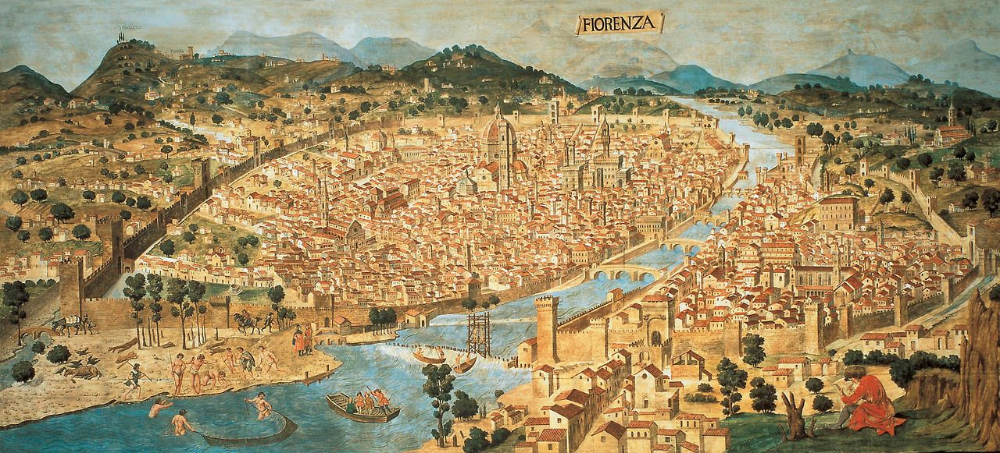
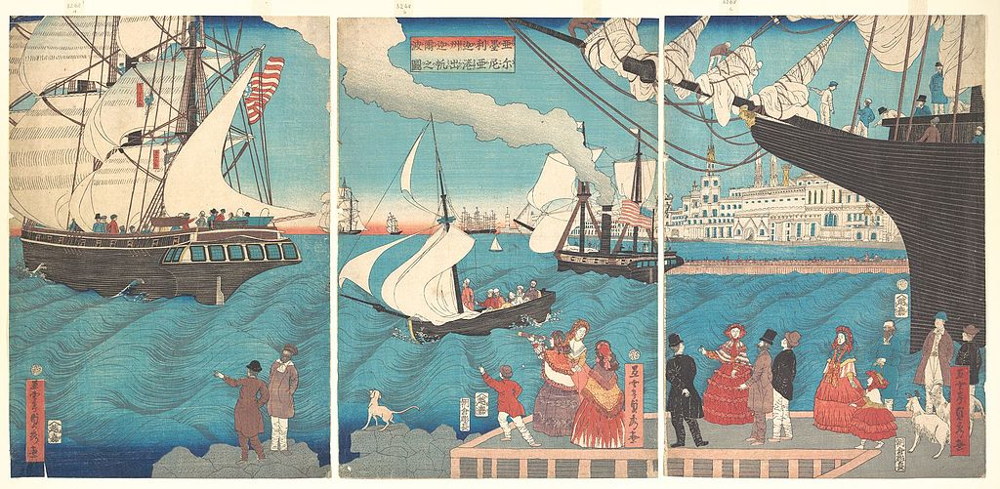

Jesse Sadler
Projects
Courses
Talks
About
Courses
Revolution in Modern Europe
Taught: Fall 2021

The Italian Renaissance
Taught: Spring 2021

Modern World History
Taught: Spring 2020
Europe and the World 1200–1648
Taught: Spring 2019
European Empires, Exploration, and Exchange since 1500
Taught: Fall 2019
Cultural and Intellectual History of Modern Europe, Eighteenth Century
Taught: Fall 2016 and Spring 2015
Introduction to Western Civilization: Circa A.D. 843 to circa 1715
Taught: Spring 2016
Virtue and Commerce: Republicanism and the Development of the Global Economy
Taught: Spring 2016
Freemasonry, Civil Society, and Democracy in 18th-Century Europe and America
Taught: Fall 2015
No matching items